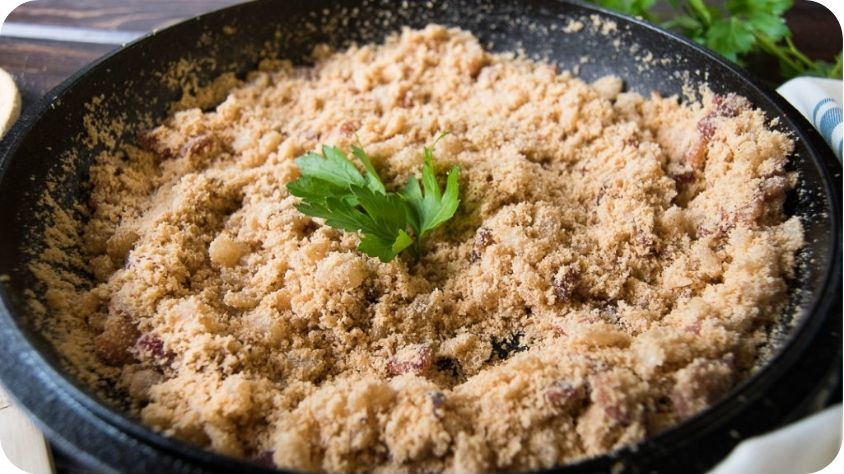

Farofa ft. Cassava flour

Description
Farofa is a traditional Brazilian side dish made with toasted yuca flour/cassava flour. This dish is kind of a big deal for us and it has a very special place in every Brazilian home from the poorest to the richest. We can prepare it all sorts of different ways; with butter and bacon, or it can be deliciously vegan with just veggies.
Ingredients
- 4 cloves of garlic, chopped
- 1 onion, chopped
- 6 ounces of slab bacon, cut into rough dice
- 2 cups of coarsely ground cassava flour
- 1 tablespoon of butter
- Salt and Pepper to taste
Steps
- Heat the fat: just add the bacon to a cold pan over medium heat. The pan needs to be cold to render the bacon fat first before it starts frying it. When the bacon starts to melt, add the butter.
- Add the onions and the garlic and saute until nice and gold.
- Add the cassava flour, season with salt and pepper, and stir.
- Toast: reduce the heat and let it toast a couple of minutes in the pan. Stir frequently to toast evenly.
Now use it to top some rice and beans with meat for the most traditional Brazilian meal!
Source: check here and here.